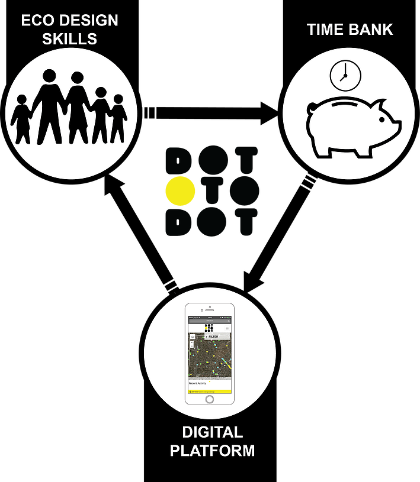

Our habitats are being urbanised, refurnished and restructured and, in this process, our cultural landscape is being radically altered. The city is our open lab. Its demand innovative ways of thinking, playing and remaking waste as social value with new designs for our society. The DOT TO DOT© is a social technology created by Studio Pop’s founding directors. Last year we obtained the “Year of Innovation Architecture and Design - Young Social Innovation Award” (2016), ENCOSI ERASMUS+ “Young Entrepreneurs Award” (2016-17), and recently the “Stalled Spaces Glasgow Award 2017”, among other prizes, to co-develop our social technology.
DOT TO DOT© works as a cross-disciplinary ecosystem that enables creative social entrepreneurs, researchers, educators, and youth to remake our cities by connecting waste to design for society through ecological design and real projects. DOT TO DOT is both digital and live platform. It represents an innovative social and environmental model that allows smart communities to remake the city by connecting waste and local communities through “real projects” in Glasgow and then Scotland.
The digital dimension is an app/mobile-friendly website titled DOT TO DOT©. This social technology offers new opportunities to reuse ecologically empty sites and buildings on a temporary basis to improve youth life and disadvantaged communities by remaking with waste and time-banking exchange. It aims to connect schools, social enterprises, young designers, housing associations, community gardens, municipalities and stakeholders locally to design and build live projects to transform stalled spaces creatively. An interactive map allows user find, select and upload projects to refill gap sites.
 DOT TO DOT© team collaboratively test and pilot eco-design solutions through research, knowledge exchange and teaching activities in the areas of Art, Waste, Design, Education, Science and Health. We work in association with a social enterprising network (GSEN), creative industry and stakeholders in association with Catalan and Scottish academic/research organisations